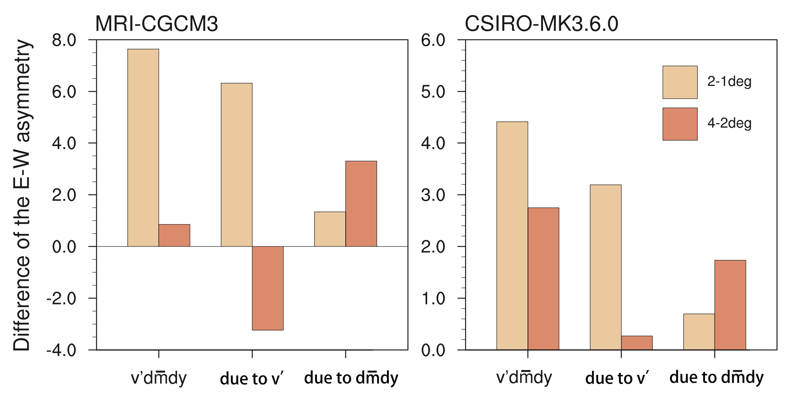

MJO propagation features changes under global warming
The MJO plays an important role in affecting global weather and climate. How do the MJO features change under global warming? It is found the MJO propagation tends to be accelerated in two selected CMIP5 models. The relative role of anomalous heating and mean static stability changes in determining MJO-scale circulation change was revealed by constructing a theoretical framework. During the initial warming phase, the circulation change is primarily controlled by the heating change, whereas during the later warming phase, it is primarily controlled by the static stability change.

MJO representations in reanalysis products with only surface variables assimilated
Current state-of-the-art atmospheric circulation models have difficulty reproducing observed MJO characteristics when forced by observed daily sea surface temperature alone. An important practical question is how much data a model needs in assimilation to reproduce real MJO events. By analyzing ERA-20C and NOAA-20CR reanalysis data, it is found a model could reproduce observed MJO for both vertical structure and propagation features by assimilating the observed surface signal alone. It serves as a reference that the assimilation of atmospheric low-level signals may be given priority in future studies related to the MJO.